好小好重
Socket函数
大多数的SocketAPI都源于BSDSocket（Berkeley Sockets，伯克利套接字），因此这些Socket函数在不同的平台上都有相似的签名和参数。
- 在Linux查看Socket函数的帮助信息
通过man手册查看相应的函数签名和用法：
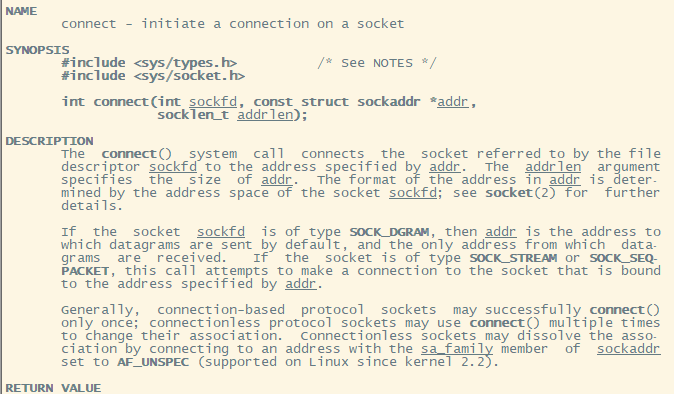
一个函数说明一般包括以下几个部分：
函数声明及相关数据结构所在的头文件。
函数签名，即该函数的参数类型、个数和返回值。
函数用法说明，可能包括一些注意事项。
函数返回值说明。
调用函数出错时可能得到的错误码值。
一些相关函数在man手册中的位置索引。
- TCP网络通信的基本流程
服务器一般通信流程：
调用socket函数创建socket（监听socket）。
调用bind函数将socket绑定到某个IP和端口的二元组上。
调用listen函数开启监听。
当有客户端请求连接上来时，调用accept函数接收连接，产生一个新的socket（客户端socket）。
基于新产生的socket调用send或recv函数，开始与客户端进行数据交流。
通信结束后，调用close函数关闭监听socket。
客户端一般通信流程：
调用socket函数创建客户端socket。
调用connect函数尝试连接服务器。
连接成功后调用send或recv函数，开始于服务器进行数据交流。
通信结束后，调用close函数关闭监听socket。

服务端代码
1 |
|
客户端代码：
1 |
|
编译后先启动服务端再启动客户端
客户端输出：
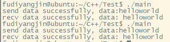
服务端输出：
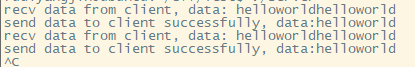
跨平台网络通信库的socket用法
socket数据类型
Windos上，socket对象的类型是SOCKET。Linux上，socket对象类型是int。所以很多网络库中使用了
1 |
|
这样就可以同时在Windows和Linux上使用SOCKET_TYPE类型代表socket了。
无论是Windows还是Linux在socket函数调用失败时均会返回-1。Windows为这种情形定义了一个INCALID_HANDLE_VALU宏：
1 |
在Linux上不存在INVALID_HANDLE_VALUE宏，可以用上述语句定义。
在WINDOWS上调用socket函数
Linux可以直接使用socket函数
//TODO Windows的之后再补
bind函数重难点分析
bind函数如何选择绑定地址
1 | struct sockaddr_in bindaddr; |
INADDR_ANY是一个宏，底层的协议栈服务会自动选择一个合适的IP地址，因此INADDR_ANY其实相当于0.0.0.0。在一台机器上开发服务器程序时有多个IP地址可选：外网IP、局域网IP、本地回环地址127.0.0.1。
bind函数端口号
TCP中，一般服务端的端口号是固定的，而客户端的端口号是由操作系统自由分配的。端口号是一个C short类型的值，其范围为0~65535。
如果客户端不绑定端口
修改后的服务端代码
1 |
|
添加了个vector记录客户端连接，客户端修改代码如下：
1 |
|
添加了个while循环以防客户端退出，先启动服务端，再启动3个客户端，并利用lsof查看当前机器的TCP连接信息。
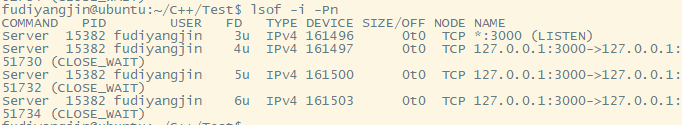
客户端绑定0号端口
1 |
|
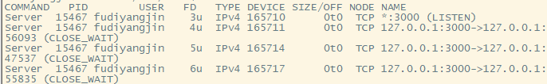
端口号仍然是自由分配的，0号端口绑定和不绑效果一样。
客户端绑定一个固定端口
将客户端的socket绑定到20000端口上
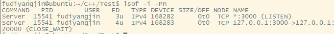
客户端确实被使用20000端口连接到server，这时再启动一个客户端进程
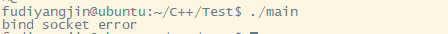
端口已被占用，新启动的客户端进程会由于调用bind函数出错而退出。
select函数的用法和原理
Linux上的select函数
select函数用于检测在一组socket中是否有事件就绪。一般分三类：
1） 读事件就绪
在socket内核中，接受缓存区中的字节数大于或等于低水位标记SO_RCVLOWAT，
此时调用recv或read函数可以无限阻塞地读该文件描述符，并且返回值大于0。
TCP连接的对端关闭连接，此时本端调用recv或read函数对socket进行读操作mrecv或read函数会返回0值。
在监听socket上有新的连接请求。
在socket上有未处理的错误
2） 写事件就绪
- 在socket内核中，发送缓冲区中可用字节数（发送缓冲区的空闲位置大小）大于或等于低于水位标记SO_SNDLOWAT时，可用无线组赛地写，并且返回值大于0.
- socket的写操作被关闭（调用了close或shutdown函数）时，对一个写操作被关闭的socket进行写操作，会触发SIGPIPE信号。
- socket使用非阻塞connect连接成功或失败时
3） 异常事件就绪
在socket上受到带外数据，函数签名如下：
1 | int select(int nfds, |
FD_SET宏本质上是在一个有1024给连续bit(共计64字节)的内存的某个bit上设置一个标志。如果需要在fd_set中删除一个fd，即将对应的bit置0，则可以使用宏FD_CLR：
1 | void FD_CLR(int fd, fd_set *set); |
如果需要将fd_set中所有的fd都清掉，即将所有bit都置0，则可以使用FD_ZERO：
1 | void FD_ZERO(fd_set *set); |
当select函数返回时，使用FD_ISSET宏判断在某个fd中是否有我们关心的事件，定义如下：
1 | int FD_ISSET(int fd, fd_set *set); |
FD_ISSET宏在本质上就是检测对应的bit是否置位
1 |
|
示意图如下：

1 |
|
编译并运行
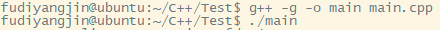
利用Linux的nc指令模拟两个客户端。
命令行窗口1使用nc命令模拟客户端1连接成功后发送hello123：
命令行窗口2使用nc命令模拟客户端2连接成功后发送helloworld：
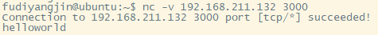
服务端输出如下：
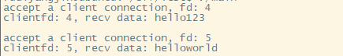
nc发送的数据是按换行符来区分的，每个数据包默认的换行符都以\n结束
客户端断开连接后，服务端输出如下：
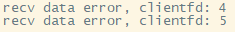
断开连接后，服务端的select函数对各个客户端fd检测时，仍然会触发可读事件，此时对这些fd调用recv函数会返回0，因此当recv函数返回0后表明对端关闭了连接。
select同样适合客户端网络通信，只需要用select检测连接socket。如果连接socket有可读事件，则调用recv函数接收数据。

几点说明：
- select函数在调用前后可能会修改readfds、writefds和excefds这三个集合中的内容，所以如果想在下次调用FD_SET将需要检测事件的fd重新添加到fd_set中。
- select函数也会修改timeval结构体的值，如果想复用这个变量，则必须给timeval变量重新设置值。以之前的代码为例，调用select后，变量tv的值会被修改（Linux会改，Windows不会）。
- select函数的timeval结构体中的tv_sec和tv_usec如果都被设置为0，即检测事件的总时间被设置为0，则其行为是select检测相关集合中的fd，如果没有需要的事件，则立即返回。代码验证如下：
1 |
|
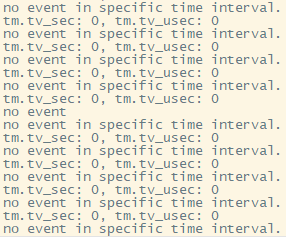
设置成0之后select检测clientfd，立即返回。
将select函数的timeval参数设置NULL，则select会一直阻塞下去，直到我们需要的事件触发。修改上一份代码，将timeval相关注释，并将select函数最后一位参数置NULL
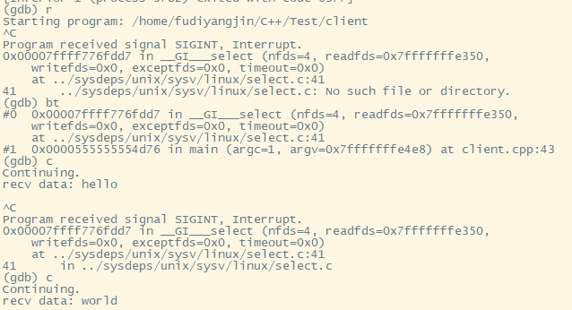
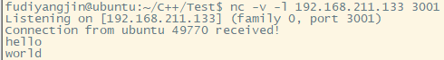
利用gdb调试程序，看程序卡在了哪个位置，run命令让程序跑起来后，利用Ctrl+C中断程序后使用backtrace命令查看当前程序调用堆栈，发现阻塞在select调用处。接着在服务端向客户端发送一个hello数据。
客户端收到数据后，select函数满足条件，立即返回，将数据输出后继续进行下一轮select检测。利用Ctrl+C中断程序，发现程序又阻塞在select调用处。
服务端再向客户端发送word数据，select函数再次返回打印出来后，又进行下一轮select检测，并在select处阻塞。
Linux上，select函数的第1个参数必须被设置为需要检测事件所有fd中的最大值加1。
Linux select函数的缺点：
- 每次调用select函数，都需要把fd集合从用户态复制到内核态，这个开销在fd较多时会很大，同时每次调用select函数都需要在内核中遍历传递进来的所有fd，这个开销在fd较多时也很大。
- 单个进程能够监视的文件描述符的数量存在最大限制，在Linux上一般为1024，可以通过先修改宏定义然后重新编译内核来调整这一限制，但这样非常麻烦而且效率低下。
- select函数在每次调用之前都要对传入的参数进行重新设定。
- 在Linux上，select函数的实现原理是其底层使用了poll函数。
socket的阻塞模式和非阻塞模式
阻塞模式指当某个函数执行成功的条件当前不满足时，该函数会阻塞当前执行线程，程序执行流在超时时间到达或执行成功的条件满足后恢复继续执行。非阻塞模式则恰恰相反，即使某个函数执行成功的条件当前不能满足，该函数也不会阻塞当前执行线程，而是立即返回，继续执行程序流。
如何将socket设置为非阻塞模式
无论是Windows还是Linux，默认创建的socket都是阻塞模式的。
在Linux上，我们可以使用fcntl函数或ioctl函数给创建的socket增加O_NONBLOCK标志来将socket设置为非阻塞模式。示例代码如下：
1 | int oldSocketFlag = fcntl(sockfd, F_GETFL, 0); |
ioctl函数与fcntl函数的使用方式基本一致
Linux上socket函数也可以直接在创建时将socket设置为非阻塞模式，socket函数签名如下:
1 | int socket(int domain, int type, int protocol); |
给type参数增加一个SOCK_NONBLOCK标志即可，例如：
1 | int s = socket(AF_INET, SOCK_STREAM | SOCK_NONBLOCK, IPPROTO_TCP); |
在Linux上利用accept函数返回的代表与客户端通信的socket也提供了一个扩展函数accept4，直接将accept函数返回的socket设置为非阻塞的：
1 | int accept(int sockfd, struct sockaddr * addr, socklen_t *addrlen); |
只要将accept4函数的最后一个参数flags设置为SOCK_NONBLOCK即可。
1 | socklen_t addrlen = sizeof(clientaddr); |
send和recv函数在阻塞和非阻塞模式下的表现
send是将应用层发送缓冲区的数据拷贝到内核缓冲区中，至于数据什么时候会从网卡缓冲区中真正地发到网络中，要根据TCP/IP协议栈的行为来确定。如果socket设置了TCP_NODELAY选项（禁用nagel算法），存放到内核缓存区的数据就会被立即发出去，反之，一次放入内核缓冲区的数据包如果太小，则系统会在多个小的数据包凑成一个足够大的数据包后才会将数据发出去。
recv函数是将内核缓冲区中的数据拷贝到应用程序的缓冲区中，拷贝完成后会将内核缓冲区中的该部分数据移除。

当socket是阻塞模式时，继续调用send/recv函数，程序会阻塞在send/recv调用处
当socket是非阻塞模式时，继续调用send/recv函数，send/recv函数不会阻塞程序执行流，而是立即出错并返回，并且会得到一个相关的错误码。
socket阻塞模式下send函数的表现
服务端代码如下：
1 |
|
客户端代码如下：
1 |
|
编译：
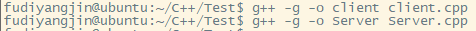
运行服务端，利用gdb启动客户端。
先启动服务器端，再用gdb启动客户端，利用run命令运行客户端：
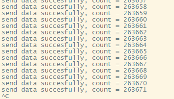
发现程序卡在了某一阶段不再运行，此时利用Ctrl+C中断程序，并利用backtrace命令查看此时的调用堆栈。
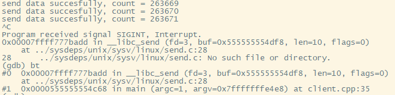
发现程序阻塞在send函数调用处，一端一直发送数据，对端应用层一直不接受数据（接受慢于发送速度），则两端的内核缓冲区（TCP窗口）很快就会被填满，导致发送端调用send函数被阻塞。socket阻塞模式下，send函数在TCP窗口太小时会阻塞send函数所在线程的执行。
编译安装Linux的tcpdump工具，用来查看TCP窗口大小的动态变化。
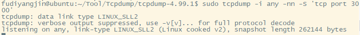
启动服务器客户端，当客户端不再输出时抓包结果如下：
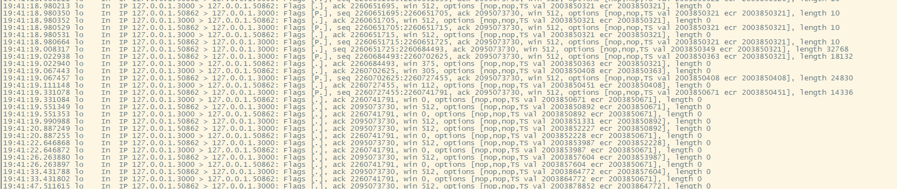
抓到的前三个数据包是TCP为建立连接而发起的：
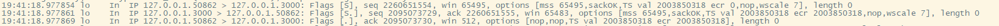

可以发现每次应答数据包中都会带上当前可用TCP窗口大小，即win字段大小的变化，由于TCP流量控制和拥塞控制机制的存在，可以发现length会在短期内慢慢增加，随着缓冲区积压数据越来越多，会慢慢变为0。
实验中还可以发现，在对端已经无法接受数据后，客户端还能发送一段时间的数据才会出现“send data error”字段：
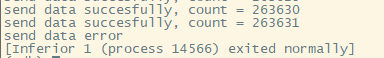
此时数据不是发送给对端，而是因为send函数实质是向内核缓冲区拷贝数据，所以数据会逐渐填满到本段内核发送缓冲区。
socket非阻塞模式下send函数的表现
服务端代码不变，修改客户端中的socket为非阻塞：
1 |
|
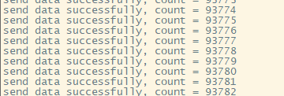
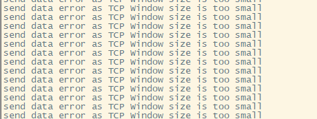
正常发送一段时间后，对端和本端TCP窗口已满，数据发不出去，但send函数不会阻塞，而是立即返回，返回值为-1，错误码为EWOULDBLOCK
socket阻塞模式下recv函数的表现
服务端代码不变，修改客户端代码：
1 |
|
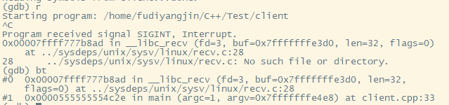
编译并用gdb调试，发现程序既没有输出recv函数调用成功的信息，也没有recv函数调用失败的信息，利用backtrace命令查看此时调用堆栈发现，阻塞在recv函数处。得出结论，如果服务器不向客户端发送数据，则此时客户端调用recv函数的执行流会阻塞在recv函数调用处。
socket非阻塞模式下recv函数的表现
服务端不变，修改客户端为非阻塞模式
1 |
|
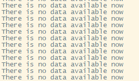
recv函数在无数据可读的情况下并不会阻塞程序执行流，在非阻塞模式下，如果当前无数据可读，则recv函数将立即返回，返回值为-1，错误码为EWOULDBLOCK。
非阻塞模式下send和recv函数返回值总结
| 返回值n | 返回值的含义 |
|---|---|
| 大于0 | 成功发送(send)或接收(recv)n字节 |
| 0 | 对端关闭连接 |
| 小于0（-1） | 出错、被信号中断、对端TCP窗口太小导致数据发送不出去或者当前网卡缓冲区已无数据可接收 |
- 返回值大于0
当send和recv函数的返回值大于0时，表示发送或接收多少字节。这种情况下要判断send函数返回值是不是我们期望发送的字节数，而不是简单判断其返回值大于0。
对端的TCP窗口可能因为缺少一部分字节就满了，所以n的值可能为(0, buf_length]。当0 < n < buf_length时，虽然此时send函数调用成功，但在业务上并不算正确，因为有部分数据并没有被发送出去。所以，要么在返回值n等于buf_length时才认为是正确的，要么在一个循环中调用send函数，如果数据一次性发送不完，则记录偏移量，下一次从偏移量接着发送，直到全部发送完为止。
- 返回值等于0
通常情况下如果send或recv函数返回0，就认为对端关闭了连接。但有一种特殊情况，send主动发送0字节时也会返回0.
- 返回值小于0
| 返回值和错误码 | send函数 | recv函数 | 操作系统 |
|---|---|---|---|
| 返回-1，错误码EWOUDBLOCK或EAGAIN | TCP窗口太小，暂时发不出去 | 在当前内核缓冲区中无可读数据 | Linux |
| 返回-1，错误码是EINTR | 被信号中断，需要重试 | 被信号中断，需要重试 | Linux |
| 返回-1，错误码不是以上3种 | 出错 | 出错 | Linux |
| 返回-1，错误码是WSAEWOUDBLOCK | TCP窗口太小，暂时发不出去 | 在当前内核缓冲区中无可读数据 | Windows |
| 返回-1，错误码不是WSAEWOUDBLOCK | 出错 | 出错 | Windows |
阻塞的socket函数在调用send、recv、connect、accept等函数时，特定条件不满足，就会阻塞其调用线程直至超时，非阻塞的socket相反。
非阻塞模式一般用于需要支持高并发多QPS的场景（如服务器程序），但依照小demo来看，这种模式让程序控制逻辑变得复杂；阻塞模式的逻辑简单，程序结构简单明了，用于特殊场景：例如：
（1）文件分段发送，每发送一段，对端都会给予一个响应，该程序可以单独开一个任务线程，send和recv依次交替，并且每次send和recv都是阻塞的。
（2）客户端与服务端只有问答模式，客户端发给服务端一个请求，服务端必定给客户端一个响应，除此之外不会推送任何数据，每次send完请求后，都可以直接使用阻塞式的recv函数接收应答包。
发送0字节数据的效果
之前提到send或recv返回0表示对端关闭了连接，但如果真的发送一个长度为0的数据，对端是否会收到这给0字节数据呢，服务端代码如下：
1 |
|
客户端：
1 |
|
启动服务端和客户端
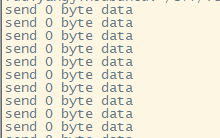
send函数每隔3s发送一段0字节数据，利用lsof -i -Pn查看连接状态：
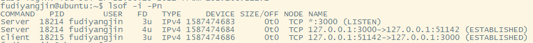
利用tcpdump抓取经过端口3000的数据包:
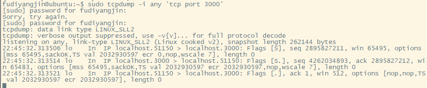
在send函数发送0字节时，tcpdump只有3次握手的数据包，也就是说这些由send函数发出的0字节数据并没有真正的发出去。
利用gdb调用服务端，经典run命令、Ctrl+C、backtrace命令
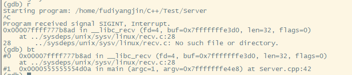
服务端阻塞在recv函数调用处，因此在send发送0字节返回0的情况下，recv是不会收到0字节数据的，只有断开连接时才会收到。
connect函数阻塞和非阻塞下的行为
创建异步connect技术（非阻塞connect）一般有以下步骤：
- 创建socket，将socket设置为非阻塞模式
- 调用connect函数，无论connect函数是否连接成功，都会立即返回；如果返回-1，则并不一定表示连接出错，如果此时错误码是EINPROGRESS，则表示正在尝试连接。
- 调用select函数，在指定的时间内判断该socket是否可写，如果可写，则说明连接成功，反之认为连接失败。
1 |
|
利用nc命令启动一个服务端程序
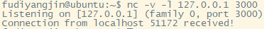
编译客户端并连接
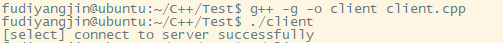
额，但是发现开不开服务器都显示连接成功，原因如下：
- 在Windows上，socket没有建立连接之前使用select函数检测是否可写，能得到不可写，连接成功检测后检测，会变为可写。上述逻辑在Windows上没有问题。
- 在Linux上，一个socket没有建立之前，用select函数检测其是否可写，会得到可写，所以上述逻辑不适应Linux。Linux上，在 connect之后不仅要调用select检测是否可写，还要调用getsockopt检测socket是否出错，通过错误码来检测和确定是否连接上，错误码为0表示连接上。反之没连接上。
修改代码：
1 |
|
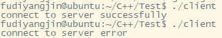
Linux poll函数的用法
poll函数用于检测一组文件描述符(File Descriptor,简称fd)上的可读可写和出错事件，其函数签名如下：
1 |
|
struct pollfd的events字段是由开发者设置的，告诉内核关注什么事件；而revents字段是poll函数返回时内核设置的，说明该fd发生了什么事件。event和revents一般有下表所示取值：
| 事件宏 | 事件描述 | 是否可以作为输入(events) | 是否可以作为输出(revents) |
|---|---|---|---|
| POLLIN | 数据可读（包括普通数据&优先数据） | 是 | 是 |
| POLLOUT | 数据可写（普通数据&优先数据） | 是 | 是 |
| POLLRDNORM | 等同于POLLIN | 是 | 是 |
| POLLRDBAND | 优先级带数据可读 | 是 | 是 |
| POLLPRI | 高优秀级数据可读，例如TCP带外数据 | 是 | 是 |
| POLLWRNORM | 等同于POLLOUT | 是 | 是 |
| POLLWRBAND | 优先级带数据可写 | 是 | 是 |
| POLLRDHUP | TCP连接被对端关闭，或者关闭了写操作，由GNU引入 | 是 | 是 |
| POPPHUP | 挂起 | 否 | 是 |
| POLLERR | 错误 | 否 | 是 |
| POLLNVAL | 文件描述符没有打开 | 否 | 是 |
poll检测一组fd上的可读可写和出错事件的概念与前面介绍select的事件含义一样。poll与select相比有以下优点：
- poll不要求开发者计算最大文件描述符加1的大小。
- 与select相比，poll在处理大数量的文件描述符时速度更快。
- poll没有最大连接数的限制，因为其存储fd的数组没有长度限制。
- 在调用poll函数时，只需对参数进行一次设置。
1 |
|
利用nc指令模拟服务器，再编译启动客户端
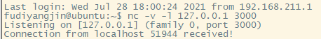
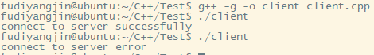
和select结果一致。
如何获取当前socket对应的接收缓冲区中的可读数据
Windows上使用ioctlsocket这个API函数，签名如下：
1 | int ioctlsocket(SOCKET s, long cmd, u_long* argp); |
Linux上用ioctl函数：
1 |
|
服务端代码：
1 |
|
使用poll函数检测在监听socket和clientsocket上是否有可读事件。对于clientsocket，当触发其可读事件(POLLIN)时表明有数据可读，调用ioctl函数获取当前socket接收缓冲区的字节数并将其打印出来。利用nc命令模拟客户端进行测试：
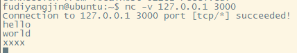
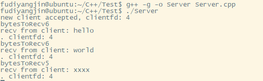
Linux epoll模型
综合selct和poll的一些优缺点，Linux从内核2.6版本开始引入了更高效的epoll模型。
基本用法
使用epoll模型之前必须创建epollfd，需要用到epoll_create函数：
1 |
|
接下来利用epoll_ctl函数将需要检测的事件fd绑定到这个epollfd上，或修改已绑定fd的事件类型，或将fd从epollfd上解绑：
1 | int epoll_ctl(int epfd, int op, int fd, struct epoll_event* event); |
将fd绑定在epollfd上之后，就可以调用epoll_wait检测事件了，函数签名如下：
1 | int epoll_wait(int epfd, struct epoll_event* event, int maxevents,int timeout); |
epoll_wait与poll函数的区别
epoll_wait函数调用成功后，通过第一个参数event就可以获得所有有事件就绪的fd，而poll函数中的事件合集数量前后不会改变。也就是说epoll_wait函数会自动将所需要的事件筛选出来，而poll函数只是打上标签，筛选还需全体遍历。
LT模式和ET模式
与poll事件宏相比，epoll模式新增了一个事件宏EPOLLET，即边缘触发模式（Edge Trigger， ET），我们称默认的模式为水平触发模式（Level Trigger， LT），区别在于：
（1）水平触发模式，一个事件只要有。就会一直触发。
（2）边缘触发模式，在一个事件从无到有时才会触发。
fd上有数据的状态认为是高电平状态，将没有数据的状态认为是低电平状态，将fd可写状态认为是高电平状态，将fd不可写状态认为是低电平状态。那么水平模式触发条件是处于高电平状态，而边缘模式的触发条件是新来的一次电信号将当前状态变为高电平状态。
水平模式的触发条件：①低电平→高电平；②处于高电平状态
边缘模式的触发条件：低电平→高电平
以socket的读事件为例，对于水平模式，只要在socket上有未读完的数据，就会一直产生EPOLLIN事件；对于边缘模式，socket上每新来一次数据就会触发一次，如果上一次触发后未将socket上的数据读完，也不会再触发，除非新来一次数据。对于socket写事件如果socket的TCP窗口一直不饱和，就会一直触发EPOLLOUT事件；而对于边缘模式，只会触发一次，除非TCP窗口由不饱和变饱和再一次变成不饱和，才会再次触发EPOLLOUT事件。
socket可读事件的水平模式触发条件：①socket上无数据→socket上有数据；②socket处于有数据状态
socket可读事件的边缘模式触发条件：①socket上无数据→socket上有数据；②socket又新来一次数据。
socket可写事件的水平模式触发条件：①socket可写→socket不可写；②socket不可写→socket可写。
socket可写事件的边缘模式触发条件：socket不可写→socket可写。
对于非阻塞socket，如果使用epoll边缘模式检测数据是否可读，则触发可读事件后，一定要一次性地把socket上的数据收取干净，即循环调用recv函数直到出错，错误码是EWOULDBLOCK(EAGAIN也一样，表示socket上的本次数据已经读完)，边缘模式伪代码：
1 | bool TcpSession::RecvEtMode() |
LT模式和ET模式处理读：
LT模式：
1 |
|
编译启动服务端，利用nc命令模拟客户端向服务端发送’abcdefg’
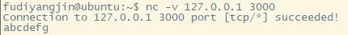
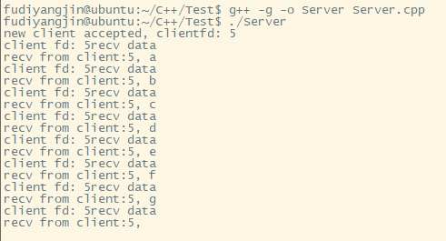
nc命令实际发送了a、b、c、d、e、f、\n这8个字符，服务器用的是LT模式，每次接收一个字符，但只要socket缓冲区中仍有数据可读，POLLIN事件就会一直触发，所以服务端有8次输出。
将代码间的注释去掉，换成ET模式，重新编译启动服务端，利用nc命令模拟客户端向服务端发送’abcdefg’。
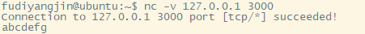
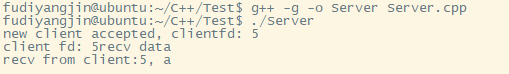
ET模式只会触发一次POLLIN事件，如果没有新数据到来，则再也不会触发，继续向服务端发送’abc‘
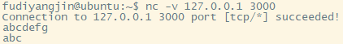
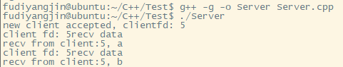
使用ET模式时，在一次POLLIN事件中就要把socket上的数据收完。
LT模式和ET模式处理写
LT模式：
1 |
|
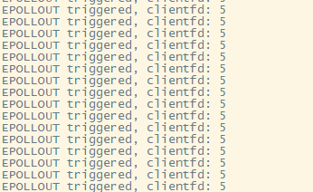
LT模式下，服务端对应的客户端fd一直可写，有写事件一直触发，所以屏幕不断输出
改成ET：
1 |
|
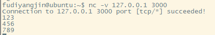
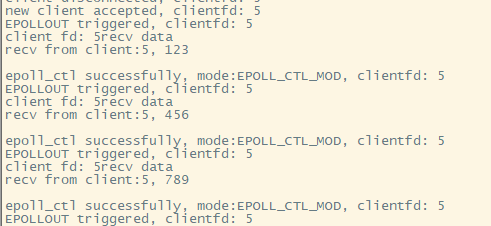
服务端给客户端fd注册了检测可写事件，可写事件也不会一直触发，只会触发一次，触发完成后只有再次注册、检测可写事件时，可写事件才会继续触发。
在LT模式下，如果依赖可写事件去发送数据，那么一定要在数据发送完成后移除检测可写事件，避免无意义的数据反复触发事件。
在ET模式下，如果依赖可写事件区发送数据，如果数据一次没有发完，则一定要继续注册、检测可写事件，否则可写事件不会继续触发，剩余数据发不出去。
结论
- 在LT模式下，读事件触发后可以按需收取想要的字节数，不用把本次接收的数据收取干净（即不用循环到recv或者read函数返回-1，错误码为EWOULDBLOCK或EAGAIN）；在ET模式下，读事件时必须把数据收取干净，因为不一定再有机会收取数据了，即使有机会也可能因为没有即使处理上次没读完的数据，造成客户但响应延迟。
- 在LT模式下，不需要写事件时一定要及时移除，避免不必要地触发且浪费CPU资源；在ET模式下，写事件触发后，如果还需要下一次的写事件触发来驱动任务，则需要继续注册一次检测可写事件。
- LT模式和ET模式各有优缺点，使用LT模式时，可以自由决定每次收取多少字节（对于普通socket）或何时接收连接（对于监听socket），但是可能会导致多次触发；使用ET模式时，必须每次都将数据收完（对于普通socket）或立即调用accept接受连接（对于监听socket），其优点是触发次数少。